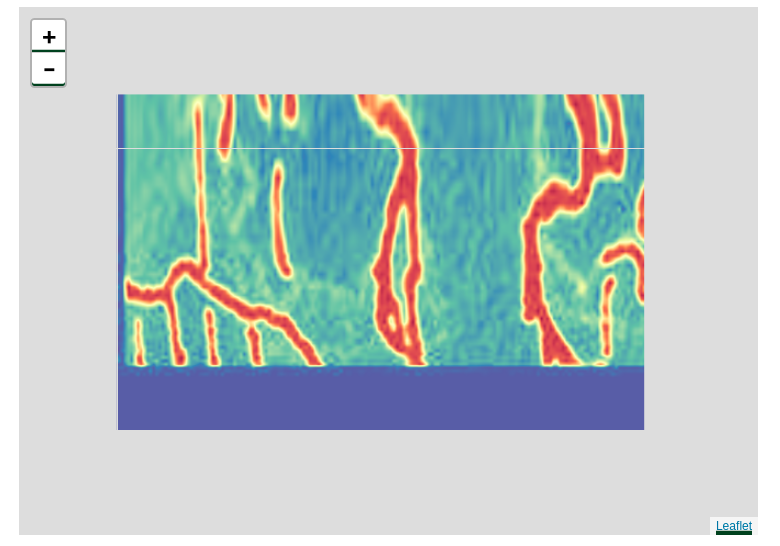

Some time ago I noticed an interesting product on DM’s Guild. Someone has written a series of solo adventures that are played in a similar manner to choose your own adventure games of the good old days. An adventure comes as a pdf file, describing a scene, presenting the player with options and directing the player to another section in the pdf file based on their choices. What makes in different is that it incorporates rules of D&D, asking for checks and other rolls when needed, setting up encounters on grid maps, prompting the player to use certain items from their inventory if they have them etc…
While playing, I found myself with three pdf files open in front of me. One for narrative sections, another copy of the same file for tile-map descriptions, one to see the actual tile-maps. At the same time on my browser, I have my own interactive character sheet app in one tab, rule references in few other tabs, and a text editor window to keep notes. It was an enjoyable but busy experience.
I stopped and got back to work while thinking to myself, “it’s a shame that this can’t be automated with ease” which made me decide to write an application that would do just that. I announced my intentions to the supportive 5th Edition community, got their input for a few issues and started building the application. We are here now. I will be writing this during the production process, so it will be a mixture of a design document and a summary of pitfalls that someone whose expertise isn’t to develop web-tools will fall along the way. It will be edited as I continue building the application as some sort of a diary. Sections might be added non-chronologically to create some appearance of narrative and to keep the related parts close to each other.
I do bioinformatics by trade and my “native” programming language is R. Surely a statistical computing language isn’t the best tool for this task but rest of my D&D related code that I intend to re-use is written in R already so I’m sticking to it… The whole thing will likely be a combination of R and javascript haphazardly glued together.
Picking the adventure format
I want to start the project by defining the file format for the adventure first. This will allow me to see what features I need to implement. My initial thoughts on this are:
It should be easy to learn. Not even drastically different from creating a pdf like the solo adventures that inspired me in the first place. So the file format will probably be markdown with some special syntax
I don’t have a background on language design. So it can’t be very complex I am hoping to get away with using existing markdown parsers to tokenize the input. I will probably be using
commonmarkpackage for this purpose.It will not be executing user generated R code. I briefly considered allowing using RMD files but since the application will be run on my servers, I don’t want people to have that kind of power. This also means that the language will not be anywhere near Turing complete.
I am aware that there are interactive fiction writing software out there with their own languages, so I might take a look at the stuff they did to see anything I might need.
Upon some reading and Redditting, I came up with a list of features. The format should support:
Asking for characters to be uploaded. Currently I do not plan on having the ability to restrict the nature of these characters in any way. Creator should explain what the suggested level for the adventure is and what kind of character would be preferred but there will be no validation. It should be possible to have multiple party members if the adventure calls for it. Currently unsure if I will allow players to add more characters outside the creator’s instructions.
Being able to create scenes that can be linked to other scenes through words/buttons.
A way to add scenes that are appended after a scene rather than force a full scene switch.
Being able to add buttons for character features such as saves or ability checks. If multiple characters are present in the party, choosing between adding buttons for all party members, just picking member with the maximum modifier or rolling a group check
Being able to add referencable objects. These will represent characters, monster stat blocks, items, spells. They will have to be represented in a standard format which will probably a table, under headers with reserved names. I will use the
import5eChar’s character definitionmonsteR’s monster definition andwizaRd’s spell definition. Not sure how to treat the items.Being able to add a custom PC to the party
Being able to refer to external files. This will turn the format into something like a zip file rather than a single markdown file but it should make working on a project easier. One can also make compendiums of referencable objects to be used in multiple projects. Possibly I may allow including things like image files in here as well though this will add some overhead to the server. Could be better to just trust that there will always be a URL with the required resources.
Being able to suggest changes to the player’s inventory, notes, character and any other record keeping device I end up adding.
Being able to check player record keeping devices for some basic conditions, probably regex dependent to alter a scene. The suggested use of this feature is to highlight certain options rather than restricting them.
Being able to start encounters with a defined map image and monsters tokens/data
Pre-built PCs for the adventure
Many interactive fiction software has ways to add some flare to the text being displayed I think I will leave this out or now. Normal html tags continue to work and I can allow people to use their own CSS files if they are really into it.
Finally, as a final sanity check, I want to make sure that any interactive action that was attempted in the 5e Solo Gamebooks to be supported.
This should have been followed by a minimal example of a file but I got distracted for now.
Dealing with maps
The most annoying task for me in this project seems to be the grid combat layer since I am not good at javascript myself and there aren’t specialized tools to deal with the issue We need the ability to use a custom background image to act as a map and some draggable tokens. It would be a bonus to be able align tokens to a grid but I have concerns about it since it would force content creator to align the files properly as well.
A quick search for a javascript library that I may port using htmlwidgets lead to
nowhere. So it appears that the best scenario here is to use leaflet or something similar. From memory I can say leaflet can have image overlays, it can add markers with custom images on a map. So I should be able to use a leaflet map without a background tile
layer. Maybe I should consider allowing creation of actual tile layers to allow for larger maps but let’s stick to the basics for now.
Initially, googling for how to add images to a leaflet map lead me to the addRasterImage function. However it appears
that it doesn’t behave well with non-projected coordinate systems which we want to be using because we are not mapping a globe here. Also my quick and dirty attempt to show this random map I found lead to an undesirable result.
{kind=link}
library(leaflet)
library(raster)
library(magrittr)
download.file('https://external-preview.redd.it/7tYT__KHEh8FBKO6bsqPgC02OgLCHAFVPyjdVZI4bms.jpg?auto=webp&s=ff2fa2e448bb92c4ed6c049133f80370f306acb3',
destfile = 'map.jpg')
map = raster::raster('map.jpg')
crs(map) = CRS("+init=epsg:4326")
leaflet() %>%
leaflet::addRasterImage(map)
After a quick visit to stackoverflow I don’t know what exactly is wrong with addRasterImage function but I know that I can use javascript to work around it.
imageURL = 'https://external-preview.redd.it/7tYT__KHEh8FBKO6bsqPgC02OgLCHAFVPyjdVZI4bms.jpg?auto=webp&s=ff2fa2e448bb92c4ed6c049133f80370f306acb3'
# get image data. we'll use this to set the image size
imageData =
magick::image_read(imageURL) %>% magick::image_info()
leaflet(options = leafletOptions(crs = leafletCRS('L.CRS.Simple'), minZoom = -1)) %>%
setView(0,0,zoom = -1) %>%
htmlwidgets::onRender(glue::glue("
function(el, x) {
var myMap = this;
var imageUrl = '<imageURL>';
var imageBounds = [[<-imageData$height/2>,<-imageData$width/2>], [<imageData$height/2>,<imageData$width/2>]];
L.imageOverlay(imageUrl, imageBounds).addTo(myMap);
}
",.open = '<', .close = '>'))So now we can show arbitrary images as maps using leaflet. If we add movable tokens of different sizes to this map, the basic functionality will be complete. addMarkers function of leaflet is the easiest way to do this. You give it an image and coordinates and it places it where you want. Lets use a random map I grabbed from Dave’s Mapper
and try adding some tokens that are grabbed from game-icons.net. While doing that we should make sure that the size of the token we are adding matches the size of a single square on the map. In the actual app, the creator should be able to give a unit square size and spawn characters of
imagePath = 'files/5eif/tile.png'
imageData =
magick::image_read(imagePath) %>% magick::image_info()
# this tile is 10x10 squares
gridWidth = imageData$height/10
gridHeight = imageData$width/10
leaflet(options = leafletOptions(crs = leafletCRS('L.CRS.Simple'), minZoom = 0)) %>%
setView(0,0,zoom = 0) %>%
addMarkers(lng = gridWidth/2, lat = gridHeight/2,options = markerOptions(draggable = TRUE),
icon = list(iconUrl = 'https://game-icons.net/icons/000000/ffffff/1x1/cathelineau/swordman.svg',
iconSize = c(gridHeight,gridWidth))) %>%
htmlwidgets::onRender(glue::glue("
function(el, x) {
var myMap = this;
var imageUrl = '<imagePath>';
var imageBounds = [[<-imageData$height/2>,<-imageData$width/2>], [<imageData$height/2>,<imageData$width/2>]];
L.imageOverlay(imageUrl, imageBounds).addTo(myMap);
}
",.open = '<', .close = '>'))Now we have a token that is appears to be at the right size on the map and fits a tile square. However, if you zoom in, you’ll notice that the size of the marker doesn’t scale with the map’s zoom level. Markers’ normal use case is to be map markers that are visible regardless of map’s zoom level so they are not scaled by default. Also there are no options to make them simply resize on a zoom event. After searching for a while I find this answer in stack exchange which leads me to believe I’ll have to use zoomend event to resize the tokens when zoom level changes.
There is some experimenting in between finding that answer and writing the code below but basically, I found that
if you have multiple tokens in different layers, you have to apply setIcon function on each layer to update them all. I also seem to be doing something wrong when using addMarker function as is doesn’t like me adding multiple markers with a single call so I’ll likely have to iterate over multiple layers to change the icon size. The easiest way to iterate a bunch of layers appears to be grouping them together and using map.layerManager.getLayerGroup() to iterate over all the layers. We will be adding the code required into the
htmlwidgets::onRender function.
imagePath = 'files/5eif/tile.png'
imageData =
magick::image_read(imagePath) %>% magick::image_info()
# this tile is 10x10 squares
gridWidth = imageData$height/10
gridHeight = imageData$width/10
leaflet(options = leafletOptions(crs = leafletCRS('L.CRS.Simple'), minZoom = 0)) %>%
setView(0,0,zoom = 0) %>%
addMarkers(lng = gridWidth/2, lat = gridHeight/2,group = 'tokens',options = markerOptions(draggable = TRUE),
icon = list(iconUrl = 'https://game-icons.net/icons/000000/ffffff/1x1/cathelineau/swordman.svg',
iconSize = c(gridHeight,gridWidth))) %>%
addMarkers(lng = gridWidth/2+2*gridWidth, lat = gridHeight/2,group = 'tokens',options = markerOptions(draggable = TRUE),
icon = list(iconUrl = 'https://game-icons.net/icons/000000/ffffff/1x1/lorc/bowman.svg',
iconSize = c(gridHeight,gridWidth))) %>%
htmlwidgets::onRender(glue::glue("
function(el, x) {
var myMap = this;
var imageUrl = '/<imagePath>';
var imageBounds = [[<-imageData$height/2>,<-imageData$width/2>], [<imageData$height/2>,<imageData$width/2>]];
L.imageOverlay(imageUrl, imageBounds).addTo(myMap);
myMap.on('zoomend', function() {
var currentZoom = myMap.getZoom();
myMap.layerManager.getLayerGroup('tokens').getLayers().forEach(function(value,i){
value.setIcon(L.icon({iconUrl: value._icon.src, iconSize: [<gridHeight>*Math.pow(2,currentZoom),<gridWidth>*Math.pow(2,currentZoom)]}))
})
})
}
",.open = '<', .close = '>'))As it stands, we’re done at a bare bones level. I’ll have to add groups for each size category unless I find a reliable way to pull token size. Token object properties doesn’t seem to be consistently updated on a size change so I don’t trust them yet. It shouldn’t affect performance too much… I will also turn this into a module with the inputs:
- background map
- minimum, maximum zoom
- initial zoom
- image paths for the tokens
- size category for the tokens (need to decide what to do about possible rectangles even though 5e doesn’t technically have them)
- initial locations of the tokens. If no location is provided, possibly line them on the top of the map so the player can place the tokens as instructed. It would be difficult to have conditional token placement unless alternative encounter scenes are created.
- possibly pop up data for the tokens. At a bare minimum, I should be adding names. Might display more information if I can.